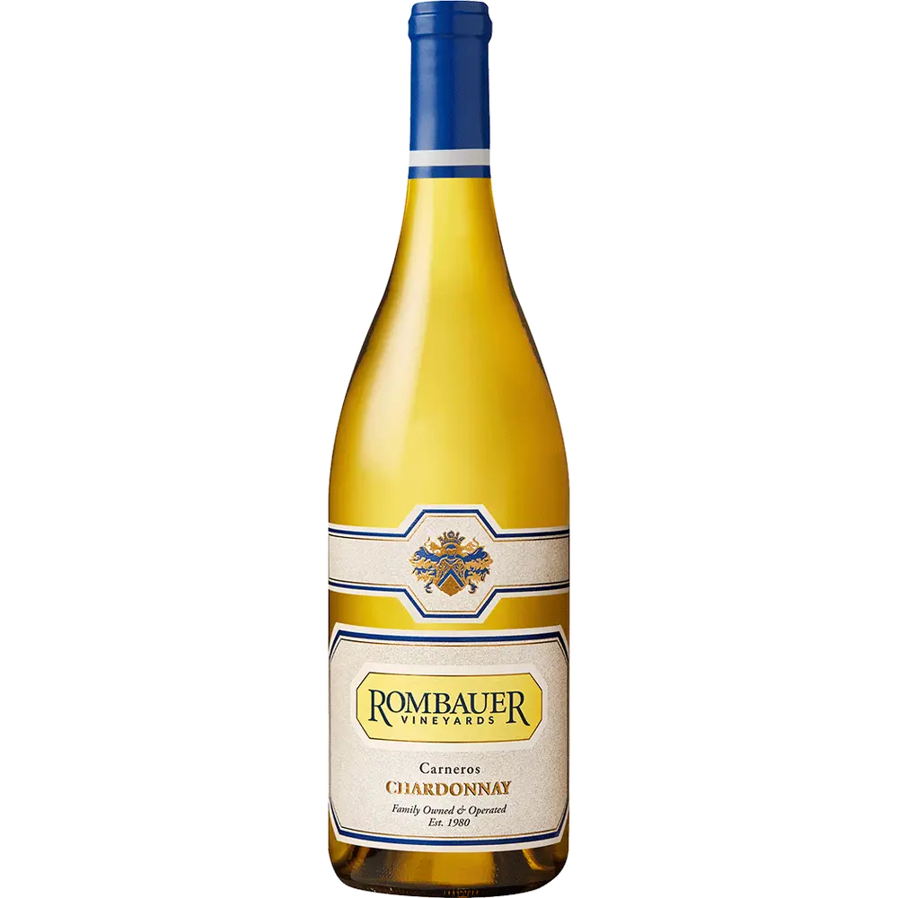

Explore Our White Wines

Barone Fini Pinot Grigio
Italy - Bright and refreshing with notes of citrus and green apple.

Nobilo Sauvignon Blanc
New Zealand - Vibrant with flavors of tropical fruit and lime zest.

Matua Sauvignon Blanc
New Zealand - Crisp and zesty with hints of grapefruit and passion fruit.

Whitehaven Sauvignon Blanc
New Zealand - Rich and balanced with citrus, melon, and gooseberry flavors.

Josh Chardonnay
California - Creamy with flavors of ripe pear, peach, and vanilla.

Frei Reserve Chardonnay
California - Bold with notes of tropical fruit, vanilla, and buttery oak.

Rombauer Chardonnay
California - Luxurious with flavors of baked apple, citrus, and buttery oak.